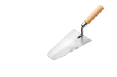

As melhores ferramentas para construção
Os elementos essenciais para construção pode-se encontrar aqui, são as mão de obra de qualidade com um profissionalismo de longa data. Pode-se encontrar conhecedores profundos de alvenaria, elétrica e hidraulica, bem como axulejistas, pintores, telhadistas, carpinteiros, marceneiros, armadores; tudo em um mesmo lugar.
Tempo e qualidade
Velocidade, caprixo, qualidade; são alguns dos adjetivos traçados e usados por estes proficionais que dedicam o seu tempo na excelencia da tarefa da qual foi designado.
Grande Pedreiro
Especialista em massa corrida e pisos finos
Estimativa de custo
| M2 | Serviço | Valor/m2 | SubTotal |
| 20M2 | Reboco Grosso | R$22,00 | R$440,00 |
| 30M2 | Massa Corrida | R$20,00 | R$600,00 |
| 60M2 | pintura | R$25,00 | R$1500,00 |
| 40M2 | Porcelanato Parede | R$60,00 | R$2400,00 |
| 50M2 | Porcelanato Piso | R$65,00 | R$3250,00 |
| 60M2 | Alvenaria | R$22,00 | R$1320,00 |
| Total | R$9510,00 |